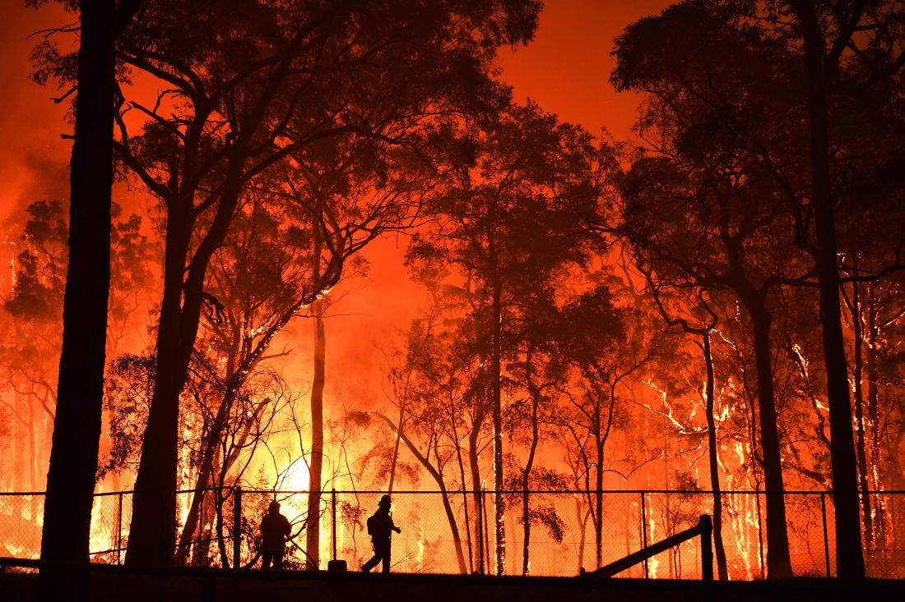
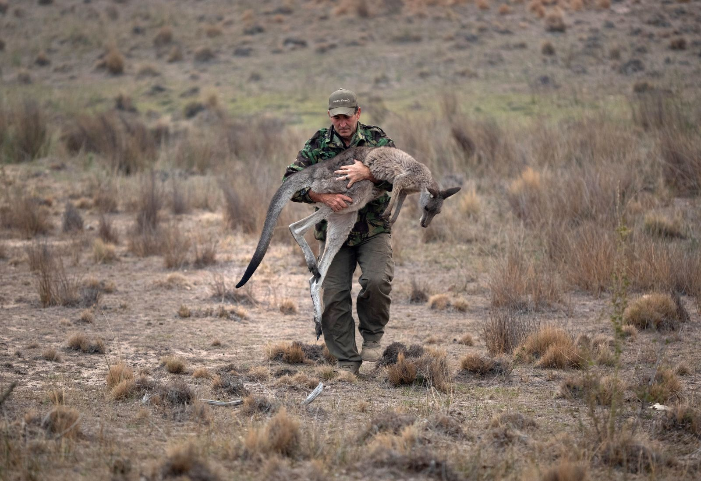

Conclusion
(1) Development trend of bushfire
• In September, the bushfires mainly occurred in QLD and NSW. The situation was under control and the bushfire spots were going down during the month.
• Then, in October, the overall bushfire situation in Australia remains stable. • Unfortunately, the bushfire situation deteriorated sharply from November. Fire spots increased dramatically in NSW, nearly 10 to 20 times than previous times.
• In December, bushfire spots in each state or territory remained at a high level, and the overall situation in QLD and WA went worse during that time.
• In January of 2020, VIC became the state most affected by the bushfires. The highest number of bushfires points were recorded during that time.
• Luckily, from the mid of January, the bushfire in Australia was gradually extinguished and the number of fire points decreased quickly.
(2) Weather conditions and the Bushfire
 • The mean temperature of each state or territory in November, December, and January was much higher than in other months. Correspondingly, bushfire situations were much worse in these months.• As for wind, the average wind speed in November and December was pretty high, which had a positive impact on the bushfire extension and the highest bushfire spots had been recorded during this time.
• MSLP in SA is much higher than other states, and we would suppose that the high MSLP can curb the spread of the bushfire.
Again